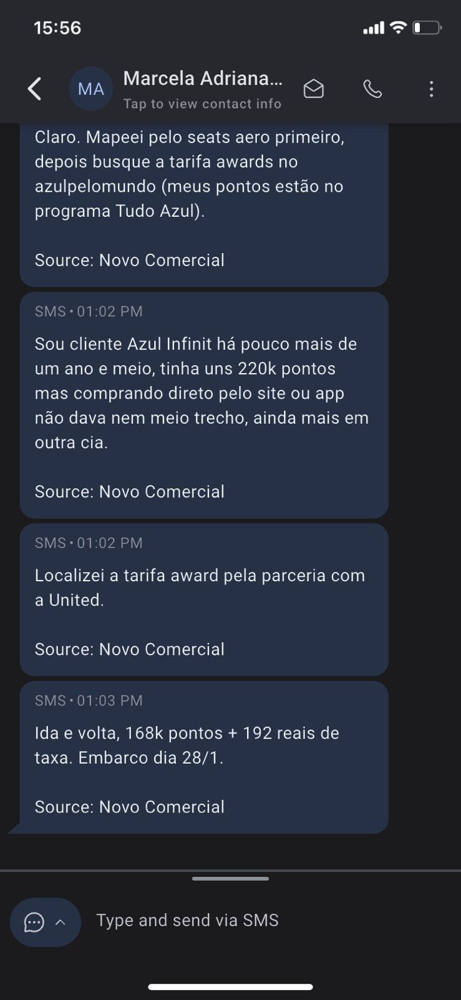

Marcela Adriana tinha tudo para ser a cliente ideal de programa de milhas. Status Azul Infinit (o mais alto da companhia), mais de 220.000 pontos acumulados, mais de 1 ano e meio como cliente fiel. Mas havia um problema gigantesco.
Ela não conseguia emitir nenhuma passagem usando seus pontos.
👤 Perfil da Cliente
❌ O problema: pontos "presos" no programa
O caso de Marcela é mais comum do que se imagina. Apesar de ter o status mais alto da Azul e um saldo robusto de pontos, ela enfrentava uma realidade frustrante:
A situação impossível
- Site da Azul: "Não há disponibilidade para emissão award"
- App TudoAzul: "Tente outras datas" (mas nenhuma data funcionava)
- Central de atendimento: "Infelizmente não temos assentos"
- Mesmo para outras companhias: Disponibilidade zero via Azul Pelo Mundo
"Era absurdo. Eu tinha o status máximo, mais de 200 mil pontos, e não conseguia emitir nem meio trecho. Os pontos estavam literalmente presos." - Marcela Adriana
O que Marcela não sabia é que estava enfrentando um problema sistêmico: programas de milhas limitam drasticamente a disponibilidade para assentos award.
🔍 Por que isso acontece?
- Assentos award limitados: Apenas 5-10% dos assentos de cada voo são liberados para pontos
- Competição acirrada: Milhões de pessoas disputando poucos assentos
- Algoritmos que priorizem revenue: Companhias preferem vender por dinheiro
- Parcerias limitadas: Azul Pelo Mundo tem acesso restrito a outras companhias

💡 A descoberta: Sistema GPS de Emissões
Foi então que Marcela descobriu o Sistema GPS através de uma indicação no grupo "Plantão de Viagens". O que ela aprendeu mudou completamente sua visão sobre como usar pontos.
A estratégia revelada
O Sistema GPS ensina a usar ferramentas profissionais que mapeiam disponibilidade award em tempo real, incluindo parcerias que os sites oficiais não mostram.
🛠️ As ferramentas utilizadas:
- Seats.aero: Mapeamento de disponibilidade award em tempo real
- Azul Pelo Mundo: Acesso via portal profissional (não o site público)
- United Airlines: Emissão direta via parceria Star Alliance
- Automações: Monitoramento 24/7 de liberações de assentos
📋 Passo a passo da emissão
Mapeamento via Seats.aero
Identificação de voo United Airlines com disponibilidade award para a data desejada
Verificação de parceria
Confirmação de que United era emissível via pontos Azul através do programa Azul Pelo Mundo
Acesso ao portal profissional
Login no sistema Azul Pelo Mundo (versão para agentes, não o site público)
Emissão imediata
Reserva confirmada: 168.000 pontos + R$ 192 de taxas para voo United de 28 de janeiro
📊 O resultado impressionante
💰 Comparação: Azul Site vs Sistema GPS
Calculando a economia:
- Valor da passagem em dinheiro: R$ 4.200
- Custo via Sistema GPS: R$ 192 (apenas taxas)
- Economia total: R$ 4.008 (95% de economia!)
🎯 Resultado Final
Marcela voou United Airlines (companhia de primeira linha) pagando apenas R$ 192 em taxas, economizando R$ 4.008 e finalmente usando seus pontos "presos".
🔍 Detalhes técnicos da operação
O caso de Marcela revela aspectos técnicos importantes sobre como funcionam as parcerias entre programas de milhas:
🌐 A parceria Azul-United:
- Star Alliance: United faz parte desta aliança global
- Azul Pelo Mundo: Portal que conecta Azul com Star Alliance
- Disponibilidade diferenciada: United libera assentos para parceiros que não aparecem no site da Azul
- Taxas reduzidas: R$ 192 para voo internacional (vs R$ 800-1.200 normal)
💭 O impacto na vida de Marcela
O sucesso da emissão representou muito mais que uma simples economia financeira para Marcela:
"Finalmente consegui usar meus pontos! Durante mais de um ano achei que tinha feito um péssimo investimento acumulando na Azul. O Sistema GPS me mostrou que o problema não eram meus pontos, era a forma como eu estava tentando usá-los."
📈 Resultados cascata:
- Confiança restaurada: Marcela voltou a acreditar em programas de milhas
- Estratégia refinada: Aprendeu a usar ferramentas profissionais
- Economia realizada: R$ 4.008 economizados em uma única viagem
- Conhecimento multiplicado: Compartilhou o método com familiares
🎓 Lições do case de Marcela
O caso de Marcela ensina lições valiosas sobre como maximizar programas de milhas:
Principais aprendizados
- Status não garante disponibilidade: Mesmo sendo Infinit, Marcela não tinha acesso aos melhores assentos
- Sites oficiais são limitados: Parceiros têm disponibilidade que não aparece nos canais normais
- Ferramentas profissionais fazem diferença: Seats.aero e similares revelam oportunidades invisíveis
- Conhecimento é mais valioso que pontos: Saber como usar vale mais que ter milhões de pontos parados
🚀 Como replicar o sucesso de Marcela
O método usado por Marcela não é exclusivo. Qualquer pessoa com pontos "presos" pode aplicar a mesma estratégia:
- Mapear disponibilidade real: Usar ferramentas como Seats.aero
- Entender parcerias: Conhecer quais companhias são acessíveis via seu programa
- Acessar portais profissionais: Usar sistemas B2B quando disponíveis
- Timing correto: Emitir quando a disponibilidade aparece
🎯 Liberte seus pontos presos
Aprenda o mesmo método que permitiu Marcela transformar pontos "inúteis" em uma viagem internacional de R$ 4.200 por apenas R$ 192.
📚 Descobrir Sistema GPS📞 O depoimento completo de Marcela
"Eu estava super frustrada. Cliente Infinit há mais de um ano e meio, 220 mil pontos na conta, e não conseguia emitir absolutamente nada. O site da Azul sempre mostrava 'sem disponibilidade', mesmo para datas flexíveis. Até para outras companhias via Azul Pelo Mundo não funcionava. Foi quando descobri o Sistema GPS no grupo do Telegram. Em poucos dias, não só entendi por que meus pontos estavam 'presos', como consegui emitir minha viagem dos sonhos. United Airlines, que eu nunca imaginei conseguir com pontos Azul, por apenas R$ 192 de taxas. Foi libertador! Agora sei que o problema nunca foram meus pontos, era eu não saber como usá-los corretamente."
💰 Resumo da Economia
De R$ 4.200 para R$ 192
Economia de 95% usando o mesmo saldo de pontos que estava "preso" há mais de 1 ano